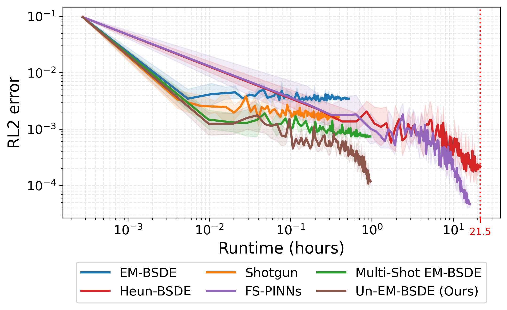
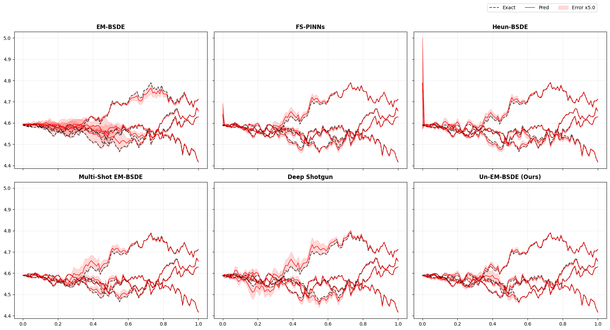
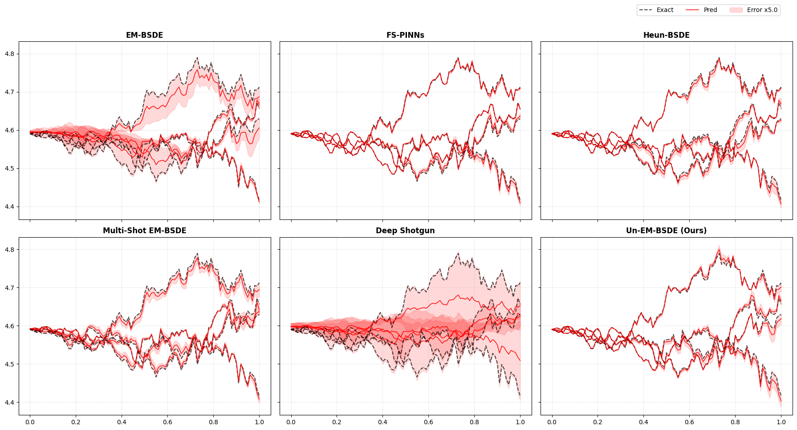

Abstract
Deep learning methods based on backward stochastic differential equations (BSDEs) have emerged as competitive alternatives to physics-informed neural networks (PINNs) for solving high-dimensional partial differential equations (PDEs). By leveraging probabilistic representations, BSDE approaches can avoid the curse of dimensionality and often admit second-order-free training objectives that do not require explicit Hessian evaluations. It has recently been established that the commonly used Euler–Maruyama (EM) time discretization induces an intrinsic bias in BSDE training losses. While high-order schemes such as Heun can fully eliminate this bias, such schemes re-introduce second-order spatial derivatives and incur substantial computational overhead. In this work, we provide a principled analysis of EM-induced loss bias and propose an unbiased, second-order-free training framework that preserves the computational advantages of BSDE methods.
Computational Efficiency
Our method maintains a substantially lower computational cost compared to fully unbiased baselines, achieving training times nearly identical to the standard biased EM-BSDE.
| Method | Unbiased | 2nd-order-free | Time |
|---|---|---|---|
| EM-BSDE (Raissi et al., 2024) | 1x | ||
| Shotgun (Xu et al., 2025) | 0.75x | ||
| Multi-Shot EM-BSDE | 1.74x | ||
| Heun-BSDE (Park et al., 2025) | 42.91x | ||
| FS-PINNs (Park et al., 2025) | 32.07x | ||
| Un-EM-BSDE (ours) | 1.79x |
Runtime vs. Accuracy
As shown in the runtime-accuracy plot below, baseline methods take a significantly long time to converge. In contrast, Un-EM-BSDE achieves high accuracy rapidly, vastly outperforming the others in terms of efficiency.

HJB Path Prediction
Visualizing the errors in the Hamilton-Jacobi-Bellman (HJB) equation demonstrates the superior precision of our methodology. The error bands remain remarkably tight across both hard and soft constraint settings.


BibTeX
@misc{seo2026unbiasedsecondorderfreetraininghighdimensional,
title={Unbiased and Second-Order-Free Training for High-Dimensional PDEs},
author={Jaemin Seo and Surin Lee and Jae Yong Lee},
year={2026},
eprint={2605.14643},
archivePrefix={arXiv},
primaryClass={cs.LG},
url={https://arxiv.org/abs/2605.14643},
}